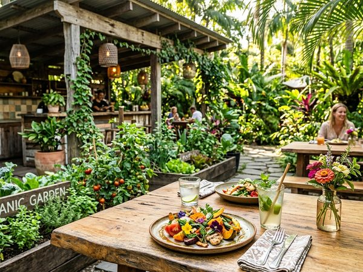
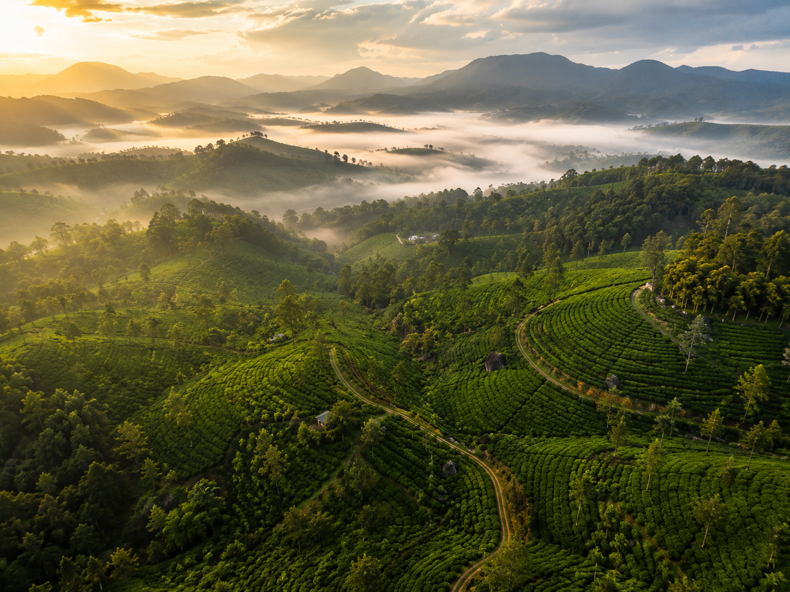
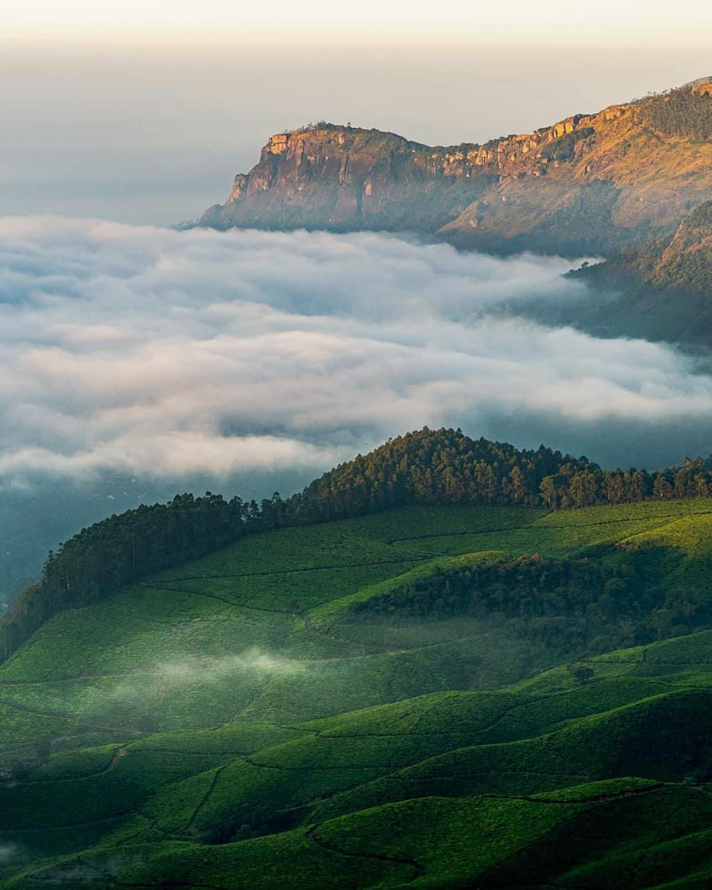
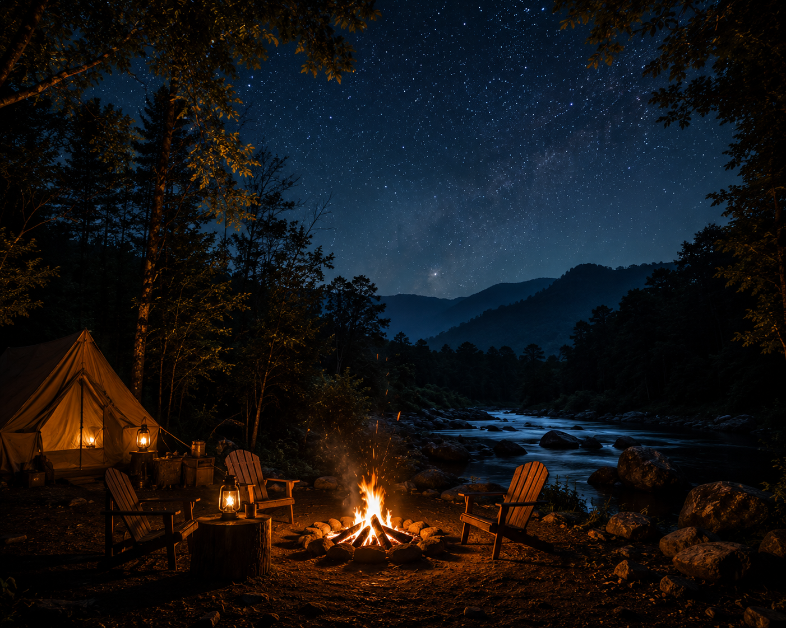

Culinary Artistry
Where ancient tribal spices, organic estate harvests, and breathtaking nature backdrops converge into an extraordinary culinary adventure.
Our Venues
From elevated timber treehouse structures to fireside stone pavilions, dine at the absolute interface of high-range wilderness.

Suspended twelve meters high in ancient banyan crowns, this timber platform serves organic local harvests infused with secret, forest-foraged tribal cardamoms and wild pepper.
Daily 7:00 AM — 11:00 PM · Reservations Recommended
Perched directly over the rushing, rocky waterfall, feel the cool mountain spray on your skin as our tea sommelier guides you through a vintage, hand-rolled organic tea-tasting.
Sunrise Tea Ceremony 6:00 AM — Sunset High Tea 6:00 PM
An open-concept stone farmhouse restaurant nested inside rolling green cardamom plantations, utilizing 100% locally sourced organic ingredients cooked on rustic wood-fires.
Lunch 12:30 PM — 3:30 PM · Dinner 7:00 PM — 10:30 PM
An interactive evening experience around a massive central crackling stone fire-ring, offering premium local wines, acoustic tribal music, and fireside grilled delicacies.
Every Evening from 7:30 PM onwards · Prior Booking MandatoryExclusive Curations